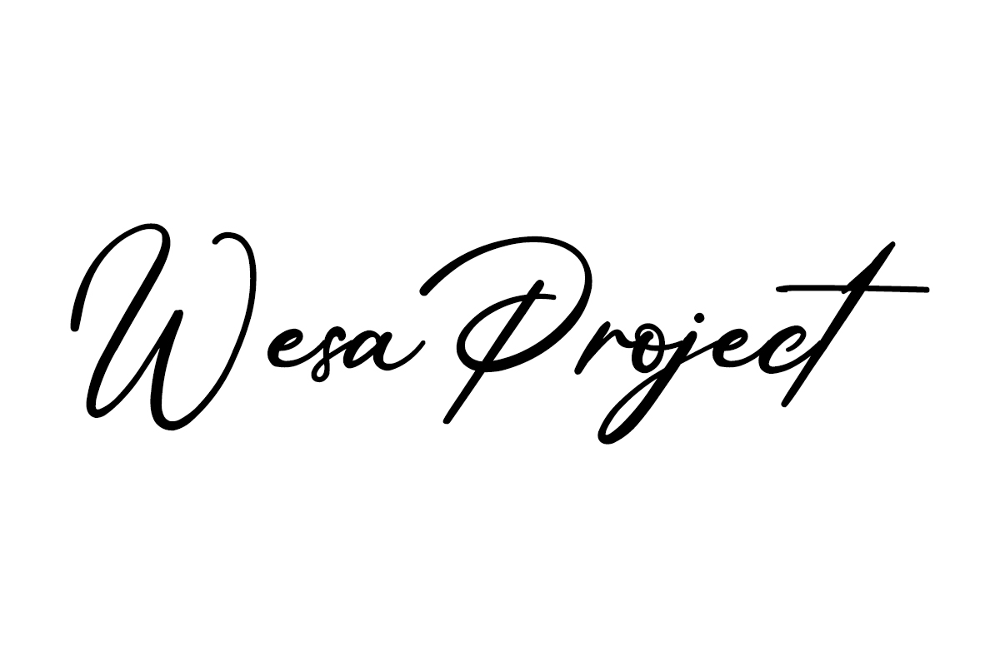

[Graphic Design]. Simple dan Berfungsi.

01. BRANDING
Redesign total identitas brand kedai kopi. Dari logo, kemasan, sampai feed IG. Fokus: hangat & modern.
View Project →02. POSTER
Seri poster event budaya dengan tipografi ekspresif dan warna bold. Dipakai di 12 kota.
View Project →03. PACKAGING
Desain kemasan lini produk herbal ramah lingkungan. Menang award packaging lokal 2025.
View Project →Saya seorang [Graphic Design] berbasis di [Bungo, jambi]. Saya percaya desain yang bagus itu tidak terlihat, tetapi Ia bekerja.